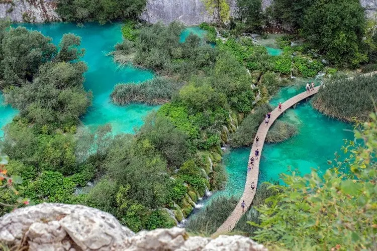

Feira de Artesanato e Gastronomia
Conheça o trabalho de artesãos locais e explore opções gastronômicas em uma feira que valoriza a criatividade, a cultura e os sabores da região.
Local: Praça Central do parque.
Seu ponto de encontro com a natureza, o lazer e a cultura.

O Parque Central é um espaço dedicado ao lazer, ao contato com a natureza e à convivência. Com áreas verdes e opções de atividades ao ar livre, é uma alternativa para quem deseja relaxar, praticar exercícios ou aproveitar o tempo livre com amigos e familiares.
Seja para fazer uma caminhada, curtir a paisagem ou participar de atividades culturais, o parque oferece oportunidades para tornar cada visita uma experiência especial.
← Voltar para a página inicialConfira os principais detalhes para planejar sua visita ao Parque Central.
| Informação | Detalhes |
|---|---|
| Funcionamento | Terça a domingo, das 8h às 20h |
| Entrada | Gratuita |
| Estacionamento | R$ 7,00 por período |
| Acessibilidade | Rampas e banheiros adaptados |
| Animais de estimação | Permitidos com coleira e guia, conforme as regras do local |
| Alimentação | Restaurantes disponíveis no parque |
O parque reúne opções de lazer e atividades para diferentes idades.
Aproveite a programação cultural e descubra atividades que podem deixar sua visita ainda mais interessante.
Conheça o trabalho de artesãos locais e explore opções gastronômicas em uma feira que valoriza a criatividade, a cultura e os sabores da região.
Local: Praça Central do parque.
Desfrute de uma apresentação musical em meio à natureza, com uma programação pensada para reunir música e cultura em um ambiente agradável.
Data informada: Domingo, 23 de outubro, das 17h às 19h.
Local: Anfiteatro do parque.
Consulte a programação atualizada antes da visita para confirmar datas, horários e disponibilidade das atividades.
Planeje sua visita e consulte as informações de localização e atendimento.
Endereço: Avenida das Flores, nº 1500 — Bairro Centro.
Telefone: (11) 4002-8922
E-mail: contato@parquecentral.gov.br
← Voltar para a página inicial